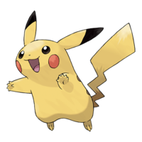
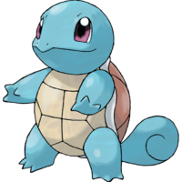
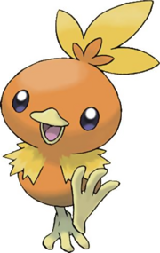
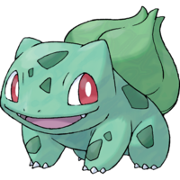
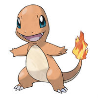

Пикачу
Пикачу (англ. Pikachu) - покемон электрического типа из первого поколения покемонов. Изначально был первой формой. Во втором поколении появилась его преэволюция пичу, который эволюционирует в пикачу в состоянии счастья. Сам пикачу эволюционирует в райчу с помощью электрического камня. Пикачу - самый известный и популярный среди всех покемонов.


Сквиртл
Сквиртл — это небольшая черепашка с кожей голубого цвета. У него круглый коричневый панцирь с жёлтым брюшком. На панцире узоры шестиугольной формы. Сбоку панцирь имеет окантовку белого цвета. У Сквиртла четыре лапки одинаковой длины.


Торчик
Торчик - маленький цыплёнок, покрытый жёлтыми и оранжевыми перьями. Его крылья только развиваются и почти бесполезны, зато ноги и ступни хорошо развиты для бега и царапанья. На голове есть гребень, который отдалённо напоминает пламя и состоит из трёх торчащих перьев. У него также как и у других огненных покемонов есть огненная железа.


Бульбазавр
Исследователи не уверены, классифицировать бульбазавра как растение или животное. Он по сути представляет собой что-то среднее между динозавром дицинодонтом и жабой.
Особого различия между полами у бульбазавров нет. Но было замечено, что у Бульбазавра Мэй (самки) на голове было пятно в форме сердца, а у Бульбазавра Эша(самца) — его нет.


Чармандер
Чармандер представляет собой рептилию красновато-оранжевого цвета, брюшко — кремового цвета. Внешне чармандер похож на динозавра, в частности, на теропода. В первом поколении у чармандера на спине были небольшие шипы, но в следующих поколениях они исчезли.
